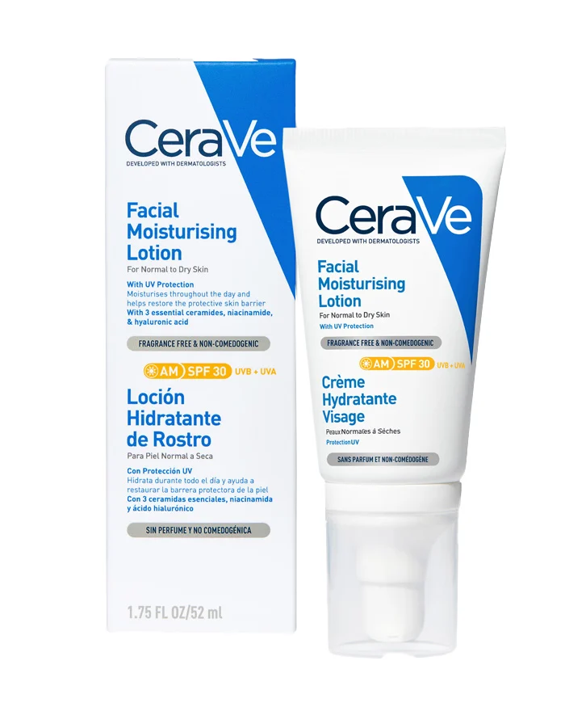
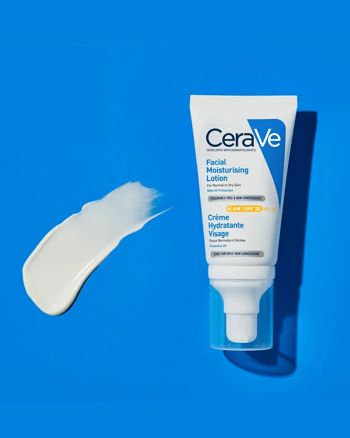
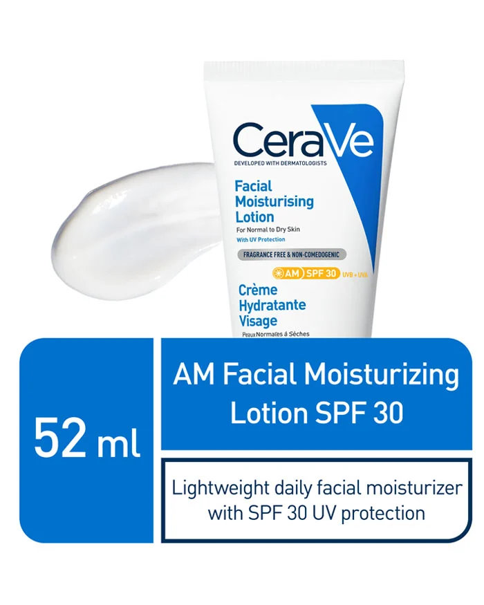

Loción hidratante no comedogénica con FPS
Protector solar de amplio espectro FPS 30$32.114
Loción hidratante no comedogénica con FPS
Una loción hidratante facial es una parte clave de cualquier rutina de cuidado de la piel por la mañana,
y un hidratante con FPS de amplio espectro es fundamental para ayudar a proteger su piel de los dañinos
rayos UVA y UVB.
Para conseguir efectos hidratantes y restaurar la barrera de la piel, busque ingredientes como el
ácido hialurónico, la niacinamida y las ceramidas, y una fórmula no comedogénica, como la de la Loción
hidratante facial de día con protección FPS 30 CeraVe, que no obstruye los poros ni provoca brotes de
acné.
El Hidratante facial de día CeraVe es una solución multitarea para el cuidado de la piel por la
mañana, ya que contiene tres ceramidas esenciales, ácido hialurónico hidratante y niacinamida calmante,
además de nuestra tecnología patentada MVE Delivery Technology para proporcionar la hidratación
necesaria durante todo el día. Ofreciendo protección solar de amplio espectro, nuestra loción hidratante
con FPS 30 cuenta con la tecnología InVisibleZinc™ (óxido de zinc microfino) que se extiende fácil y
uniformemente sin dejar un residuo calcáreo. Y como la Loción hidratante facial de día CeraVe no es
comedogénica y no obstruye los poros, es ideal para todo tipo de piel.
| Ingredientes | Ingredientes Activos: Homosalato (10%), Meradimato (5%), Octinoxato (5%), Octocrileno (2%), Óxido de Zinc (6,3%) Ingredientes Inactivos: Agua, Niacinamida, Glicerina, Alcohol Cetearílico, Metosulfato de Behentrimonio, Dimeticona, BHT, Ceramida NP, Ceramida AP, Ceramida EOP, Carbómero |
| Contenido | 52 ml |
| Beneficios |
|
| Cómo ultilizarlo |
|